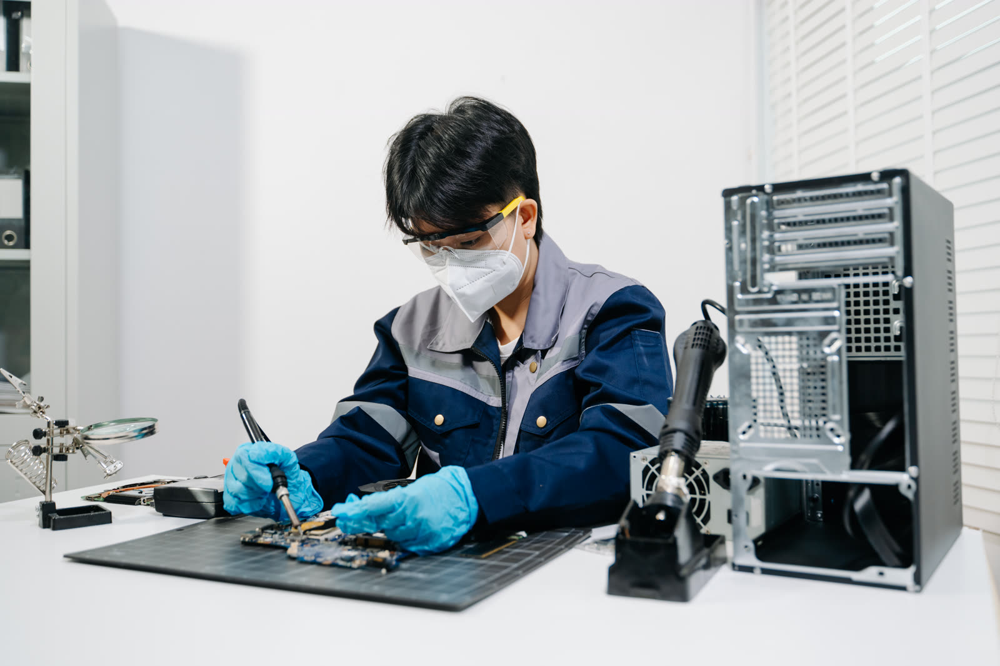
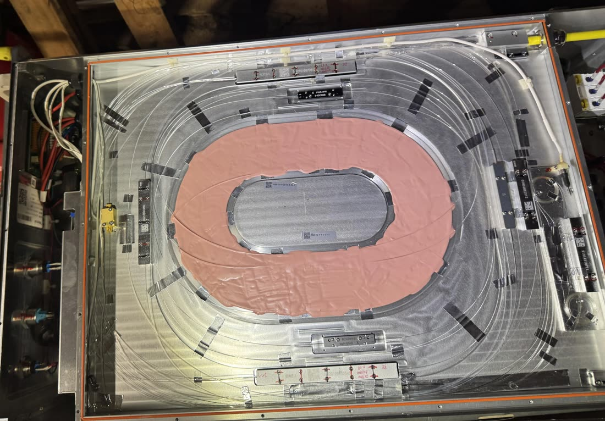
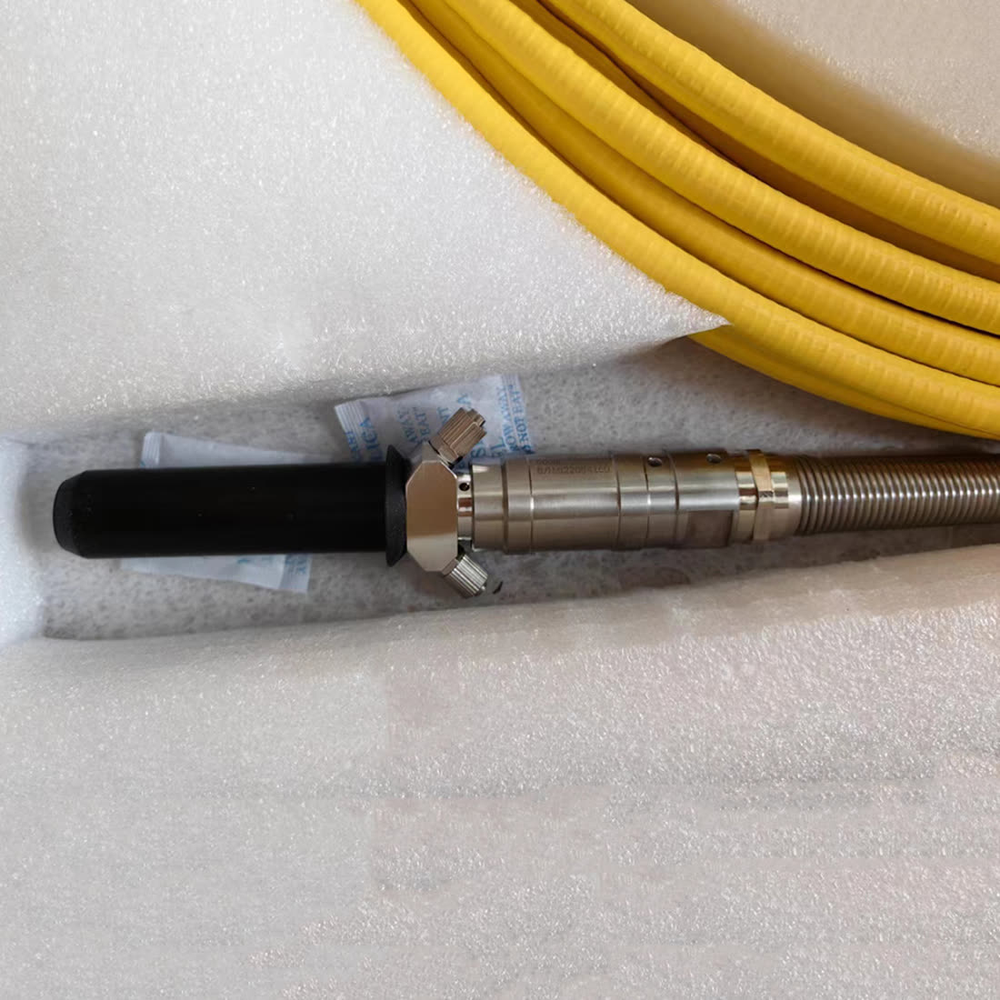
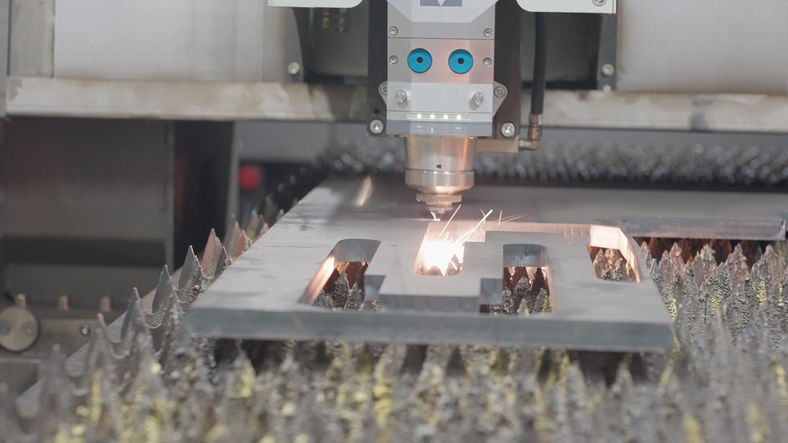
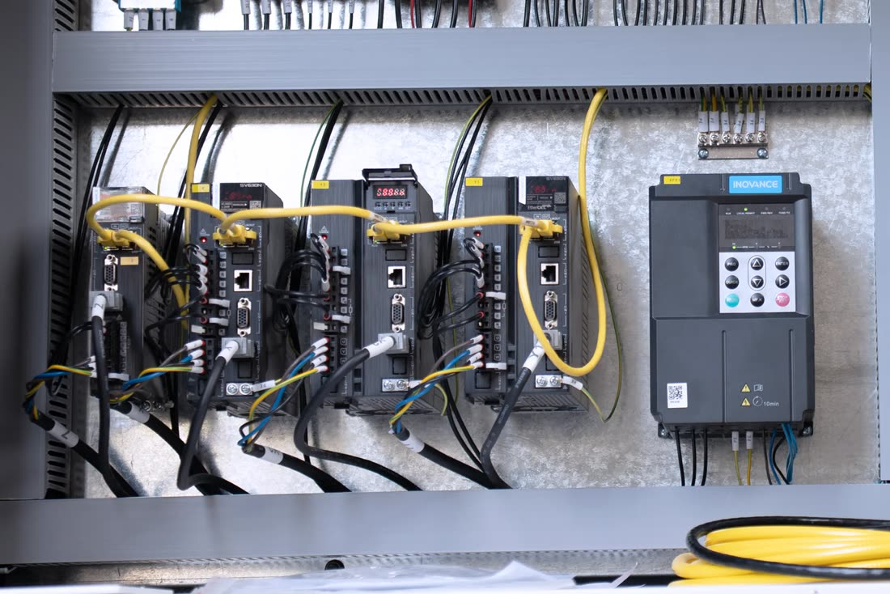
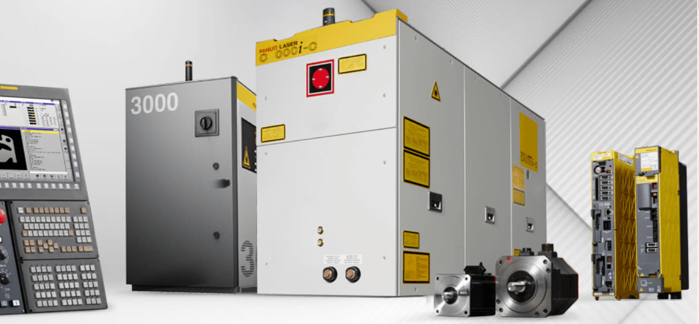

We install, commission, relocate and repair industrial laser machinery: fiber cutting, marking and engraving, cleaning, welding and cladding systems, robotic cells and automated loading lines. We service the parts most owners cannot get serviced locally, including laser sources, power supplies, scan heads and fiber delivery cables. On site, from New Jersey.
Nationwide field service · based in Parsippany, New Jersey
Independent service across the United States and Canada. Pick the one that matches your equipment, or start from what the machine is doing.
Fiber and CO2 cutting, welding, cleaning and cladding machines. Installation and commissioning, component-level repair, control and drive retrofit, cutting heads, sources, chillers and gas paths.
Flexo plate imagers, laser die cutting and converting, coding and marking, gravure and screen engraving, and the laser cleaning cells beside them. 84 brands and platforms documented.
Ultrafast, Ti:Sapphire, picosecond, OPO and OPA, harmonic stages, diode drivers and power supplies, including instruments the manufacturer no longer supports.
Rather not wait for the call? Monthly and quarterly preventive maintenance programs put the machines you depend on on a schedule, with an equipment record and written findings after every visit.
Machine placement coordination, utility checks, alignment, first cuts and operator handover for new and imported laser machinery: flatbed and tube cutters, robotic cells, coil-fed and automated loading lines, and laser welding, cleaning and cladding systems. Site readiness is reviewed before delivery.
Machine-down service calls: cutting problems, motion and CNC faults, chiller and cooling issues, interlocks, electrical troubleshooting, and cutting-head work on Raytools, BOCI, OSPRI and similar heads.
Component-level diagnostics and repair on Raycus, IPG, MAX, JPT and GW sources, power supplies and DC modules: the failures that usually mean waiting for an overseas technician.
Inspection and damage assessment of high-power delivery cables and QBH/QD connections, with removal, managed repair and reinstallation handled under a defined scope.
Pre-move condition documentation, dismantling scope, utility requirements at the new site, transport coordination with rigging partners, and startup after the move.
Conversion of legacy CO2 machines to fiber, and modernization of aging Trumpf, Amada and other European and Japanese platforms with current-generation sources, cutting heads and control systems. We have done these conversions before; scope and feasibility are defined per machine.
Scheduled inspection and maintenance with written reports, so machine condition is documented before it becomes downtime.
Cutting, marking, engraving, cleaning, welding and cladding systems share the same core: a laser source, optics or a scan head, motion, cooling and controls. Those are exactly the parts we diagnose and repair on site.
Flatbed and tube cutters: motion and CNC faults, cutting-head work, source and power, chiller, gas and cutting-parameter recovery.
Fiber and CO2 marking and engraving systems: galvo/scan head, source, F-theta optics, motion, controls and software setup.
Handheld and cabinet rust-removal and surface-prep systems: fiber source, scanner head, optics, cooling and controls.
Handheld and automated fiber welding: source, wobble head, wire feed, optics, safety interlocks and controls.
Cladding and LMD/DED cells: laser and optics, powder or wire delivery, motion, shielding and control-system support.
Robotic laser cells, tower and load/unload automation: integration, controls, safety and interlock testing, and recommissioning.
PhaseX Laser is an industrial laser service company based in Parsippany, New Jersey, operating as a division of CoreX Robotics Services LLC. Our background is industrial machinery manufacturing and field service. We built, installed and serviced fiber laser cutting machines before founding PhaseX. That includes laser source diagnostics and high-power fiber delivery cable work.
Machine importers and owners work with us because we solve on site what would otherwise require a technician flown in from the manufacturer. We serve New Jersey and the surrounding region.





We work at the component and system level, so brand is rarely the limit. If your machine or its maker is not listed, call us. The odds are we service it, or the source and controls inside it.
For complete-machine platforms such as Trumpf, Bystronic, LVD, Prima Power, Amada, Mazak, HSG, Bodor and Senfeng, we provide independent out-of-warranty field support and do not perform manufacturer warranty work. Brand and manufacturer names are used for identification only. PhaseX Laser is an independent service provider and is not an authorized service center for any manufacturer unless expressly stated in writing.
Machine, fault, site conditions, required tooling and documentation are confirmed in writing before any visit. Scheduling and response time are confirmed for each assignment.
The agreed scope is executed on site. We name the machine, the fault and the fix. Findings are shared as they happen, not after the invoice.
Every job closes with a written service report: machine and serial data, reported symptom, diagnostic actions, readings, parts, test results and open items, with photos.

When a machine is worth keeping but its electronics are done, we replace the entire chain, not a single part: CNC and control system, servo drives and complete motor groups, cutting head, laser source and fiber delivery cable.
New-generation components, matched to the machine and wired and commissioned as one system. Scope and feasibility are defined per machine before any work starts.
Flexo plate imaging, laser die cutting and converting, gravure and rotary screen engraving, and production line coding. Independent field service for machines that are out of warranty, out of support, or built by a company that is no longer there.
Packaging laser serviceTwo services for universities, laboratories and photonics companies. Repair and diagnostics when an existing laser has stopped producing usable output. Systems integration when an experiment has to be built, automated, moved or brought back into service.
Laser repair Laser systemsWe travel. A machine-down call anywhere in the United States or Canada is a flight and a rental car, and travel is quoted separately and clearly.
Fastest response in the Northeast, where we are based. Scheduled work, installations and retrofits planned anywhere in North America.
When your team needs additional coverage for an installation, commissioning job or machine-down service call anywhere in North America, PhaseX executes approved field assignments under your direction. You retain all customer and warranty administration; PhaseX performs only the field scope you authorize in writing and does not assume or modify the OEM warranty.
PhaseX will not solicit or bypass customers introduced by a partner for the assigned work.
Discuss a partnershipComponent-level diagnostics and repair on Raycus, IPG, MAX, JPT and GW sources, power supplies and DC modules. These are the failures that usually mean waiting for an overseas technician.
Cutting-head work on Raytools, BOCI, OSPRI and similar heads, as part of machine-down service calls.
Yes. Fiber and CO2 marking and engraving systems, including Boss Laser, Epilog, Trotec, Universal Laser Systems, Kern, Keyence, Telesis and others. We work on the galvo/scan head, laser source, F-theta optics, motion, controls and software setup.
Yes. Handheld and cabinet laser cleaning systems and fiber laser welders (IPG LightWELD, P-Laser and similar): laser source, scanner or wobble head, optics, wire feed, cooling, interlocks and controls.
Yes. On cladding and LMD/DED cells we provide field support on the laser and optics, powder or wire delivery, motion, shielding and the control system, within a defined scope.
PhaseX Laser is an independent service provider. We are not an authorized service center for any machine manufacturer unless expressly stated in writing. Manufacturer and brand names are used for identification only.
Work on equipment under an active manufacturer warranty is performed only within a scope authorized in writing by the machine seller or manufacturer.
We work across the United States and Canada. Parsippany, New Jersey is the base and the Northeast gets the fastest response, but we travel for machine-down calls, installations and scheduled work anywhere in the United States and Canada. Travel is quoted separately and clearly.
Yes. We convert legacy CO2 machines to fiber and modernize aging Trumpf, Amada and other European and Japanese platforms with current-generation sources, cutting heads and control systems. We have done these conversions before; scope and feasibility are defined per machine.
Machine, fault, site conditions, required tooling and documentation are confirmed in writing before any visit. Scheduling and response time are confirmed for each assignment.